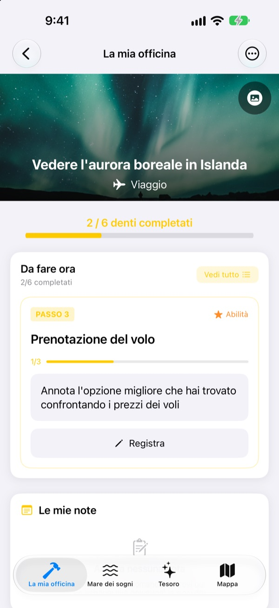
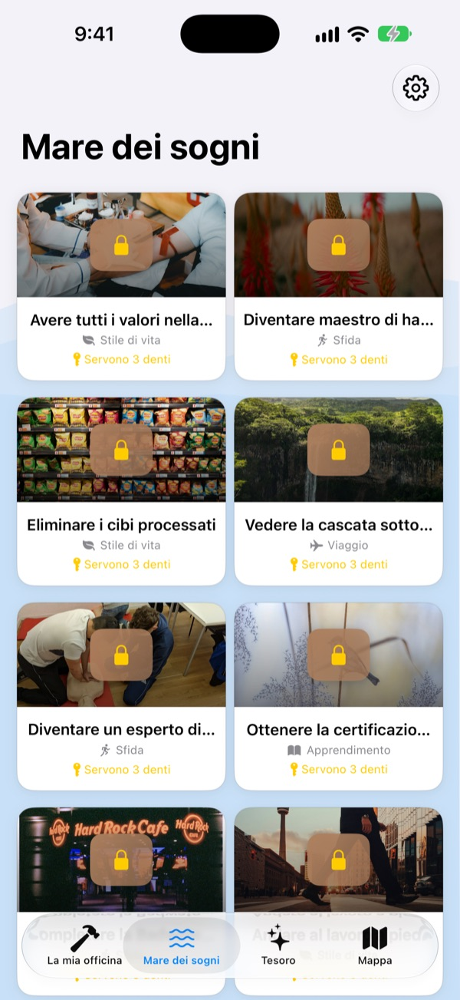
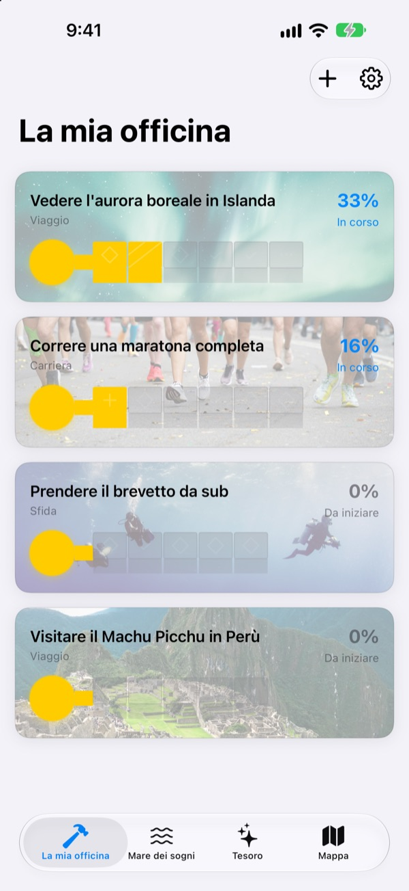
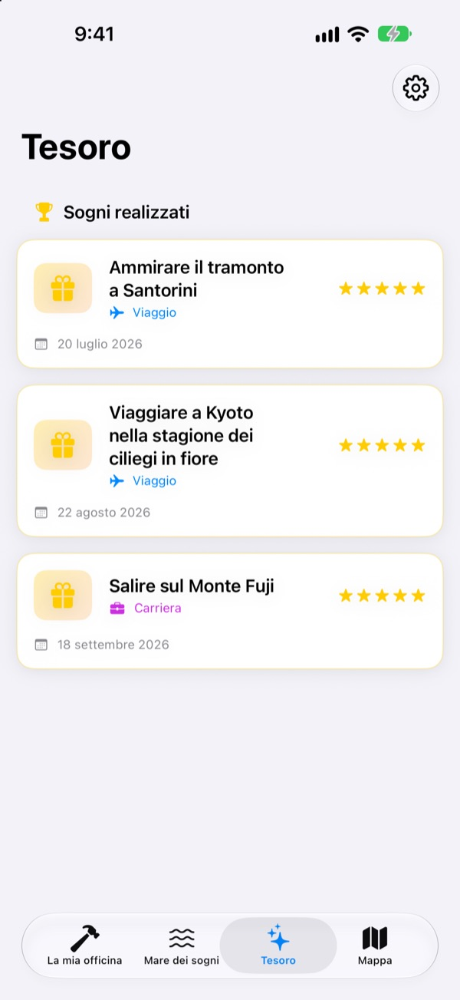

Non limitarti a
scrivere i tuoi sogni
Scegli un sogno e i piccoli passi che ti ci portano diventano i denti di una chiave. Rispondi al passo di oggi, una domanda alla volta, e prima che te ne accorga lo scrigno è aperto.
Lo compri una volta e hai tutte le funzioni. Niente abbonamento, niente pubblicità.

Completa la chiave
Al sogno dell’aurora boreale mancano due passi. Rispondi a ogni domanda con una riga (o lasciala vuota) e tocca «Avanti». Ogni passo completato riempie un dente, e con la chiave completa si apre lo scrigno.
Hai mai scritto una lista dei sogni e poi l’hai dimenticata?
«Vedere l’aurora boreale» è così grande che non sai da dove cominciare, e resta sulla lista per anni. Dream Seeker lo divide in passi che puoi fare oggi, come informarti sulla stagione, mettere da parte i soldi e prenotare i voli, e ti mostra solo quello da fare adesso.
Più di 590 sogni tra cui scegliere
Viaggi, esperienze, traguardi, salute, apprendimento e relazioni. I sogni di sei aree galleggiano in scrigni nel Mare dei sogni. Portane uno nella tua officina e i suoi passi sono già pronti.
Il tuo non c’è? Crealo con un titolo, un’area e i passi necessari.

Un dente alla volta, quanto basta per oggi
La mia officina mostra a che punto è la chiave di ogni sogno. Il passo da fare è in cima, e rispondendo alle sue domande si riempie un dente.
Risposte e foto si raccolgono in Le mie note, e la Cronologia dei progressi ti fa ripercorrere tutta la strada.

I sogni realizzati nel Tesoro, i luoghi sulla mappa
Riempi tutti i denti e apri lo scrigno. I sogni realizzati si accumulano nel Tesoro con la loro data, e i sogni in pausa ti aspettano lì finché non li riprendi.
I sogni legati a un luogo compaiono sulla mappa, così vedi tutti i posti dove vuoi andare.

Inizia in tre passi
- 1
Scegli un sogno
Tocca uno scrigno nel Mare dei sogni e scegli «Porta nella mia officina».
- 2
Rispondi al passo di oggi
Rispondi una alla volta alle domande del passo in cima per riempire un dente.
- 3
Apri lo scrigno
Quando tutti i denti sono pieni, la chiave è pronta e lo scrigno si apre.
Sei aree nel Mare dei sogni
- Viaggio
- Vedere l'aurora boreale in Islanda · Ammirare il tramonto a Santorini
- Esperienza
- Provare il paracadutismo · Provare il parapendio
- Traguardi raggiunti
- Correre una maratona completa · Trekking al campo base dell'Everest
- Salute
- Fare 20 trazioni alla sbarra · Avere gli addominali scolpiti
- Studio
- Parlare inglese fluentemente · Parlare francese fluentemente
- Relazioni
- Fare il giro del mondo con i genitori · Passare un mese a Jeju con gli amici
Ogni area ha quasi cento sogni. Crea i tuoi con «Aggiungi un nuovo sogno» in La mia officina.
Un solo acquisto, tutto incluso
L’app
- Più di 590 sogni con domande per ogni passo
- I tuoi sogni personali
- Le mie note con foto e la Cronologia dei progressi
- Tesoro e mappa
- Modalità Coltiva i sogni
- Gli aggiornamenti futuri
Sostieni lo sviluppatore (facoltativo)
- Se l’app ti è utile, puoi lasciare una piccola mancia dalle Impostazioni
- La mancia non sblocca nulla. Anche senza, tutte le funzioni restano tue
Mance singole, non un abbonamento.
Nell’app non c’è niente da pagare a parte. Niente account, niente pubblicità.
Domande frequenti
Come inizio?
Nella scheda Mare dei sogni, tocca uno scrigno che ti piace e scegli «Porta nella mia officina». In La mia officina rispondi alle domande del passo attuale e i denti si riempiono uno alla volta. Quando sono tutti pieni, apri lo scrigno.
Posso aggiungere un mio sogno?
Sì. In La mia officina tocca «Aggiungi un nuovo sogno» e inserisci titolo, area e i passi per arrivarci.
Come metto in pausa un sogno o lo riprendo?
Nel menu di un sogno in corso scegli «Rinuncia a questo sogno»: passa in Sogni in pausa, nel Tesoro. Lì tocca «Riprendi» per riportarlo in officina, oppure «Elimina definitivamente» per cancellarlo.
Cos’è la modalità Coltiva i sogni?
Una schermata che gestisce i sogni come la scalata di una montagna. Attivala o disattivala in Impostazioni > Schermata. Puoi seguire scadenze per ogni passo e ostacoli come costi e tempo, come in un progetto.
Le foto non si vedono.
Alcune immagini di sfondo vengono scaricate da Internet. Controlla di essere connesso. Senza connessione compare un’immagine predefinita.
Posso trasferire le note su un nuovo iPhone?
Le note sono salvate solo su questo dispositivo, senza account né sincronizzazione. Se ripristini un nuovo iPhone da un backup iCloud o dal computer, arrivano insieme ai dati delle altre app.
Ci sono acquisti nell’app?
No. Con l’app hai tutte le funzioni. Le mance nelle Impostazioni servono solo se vuoi dire grazie.
I miei sogni e le note vengono inviati da qualche parte?
No. Non c’è account, né pubblicità, né strumenti di analisi. Sogni, note e foto restano sul tuo dispositivo.
Come vi contatto?
Bug, idee o qualsiasi altra cosa: inviala da «Invia feedback» nelle Impostazioni dell’app, oppure con un DM su Instagram (@lee25_ios).
Domande o problemi? Scrivi a leeo@kakao.com.